Selected works · art first
The things I want you to remember.
Painterly environments, architectural forms, and material studies. A considered edit of current work and the experiments that shaped it.
01 · Selected works
Image before explanation.
A deliberately narrow edit: dominant images, smaller echoes, and tactile details. Open any work for the full-resolution plate.

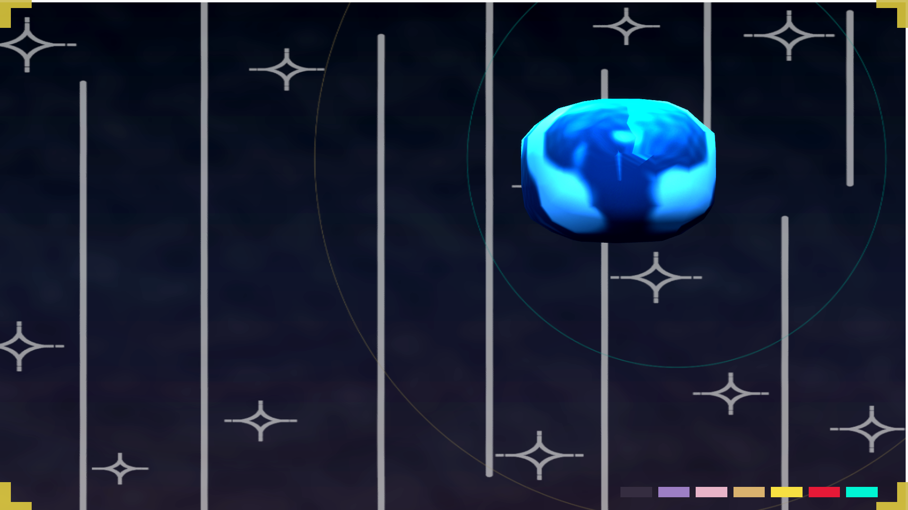

Earlier realtime lookdev · September 2026
Earlier material and lighting explorations.
Multi-camera realtime lookdev across Melodia: cel diffuse, iridescent velvet, glints, fairy dust, organza/chiffon glow, constellation filaments, resonance, and inspection matrices. The edit below promotes only the strongest hero families; the full suite remains available for process review.

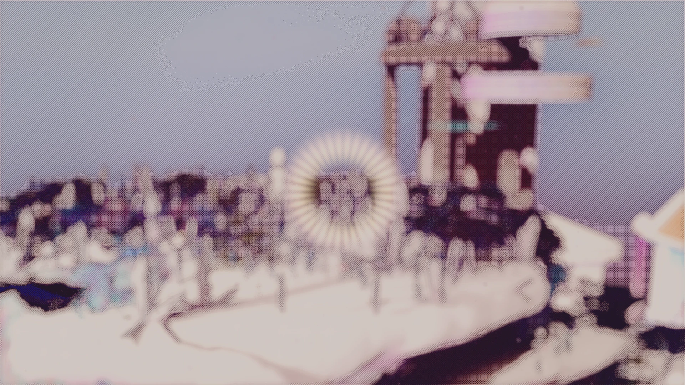

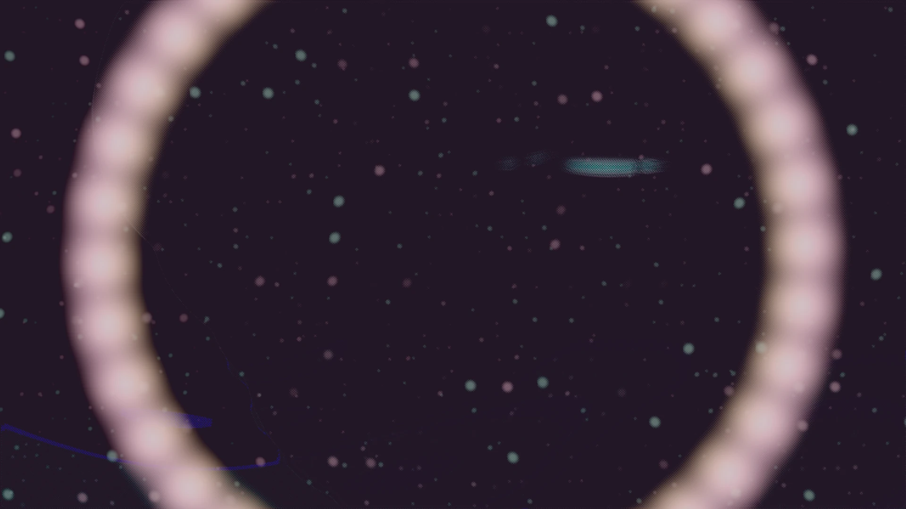

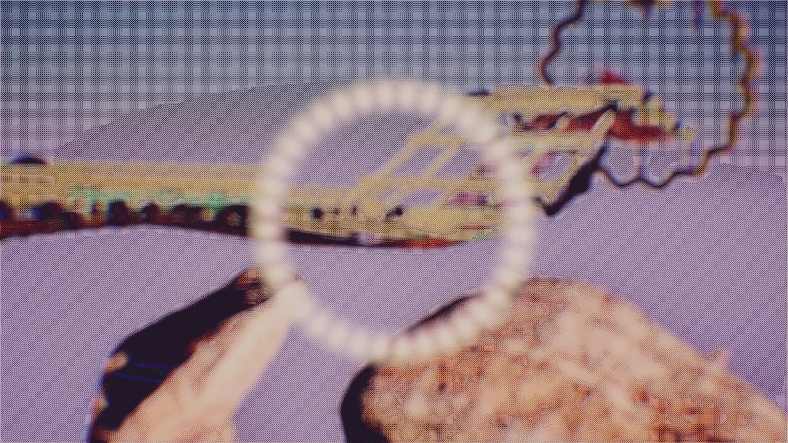
02 · Environment studies
Worlds begin as light, terrain, and surface.
Recent reviewed Melusina Morning captures: composition, authored terrain corners, foliage, atmosphere, and stylized light before the premium shader-lookdev pass.

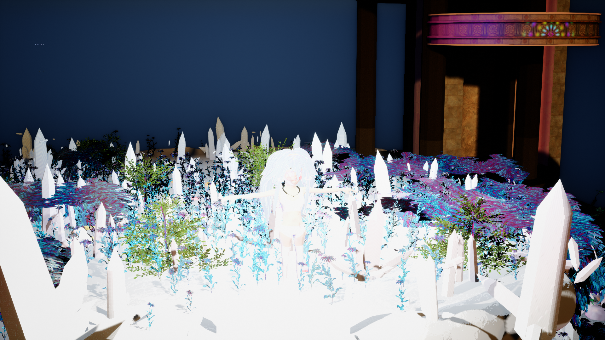

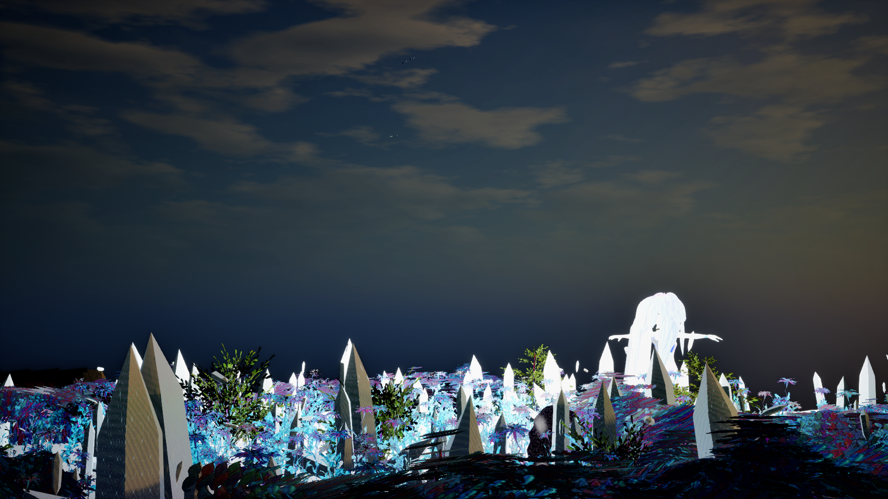

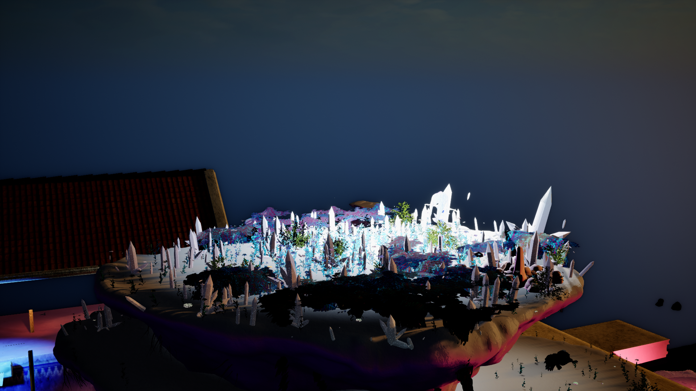
Environment study / Blender + TouchDesigner
The river, in five different lights.
One procedural riverbank, five approaches to colour and atmosphere.
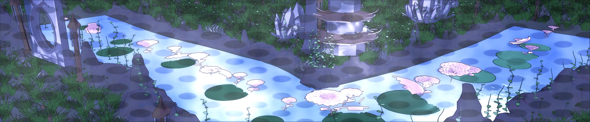
03 · Objects & ornament
Small things deserve drama too.
Architectural fragments, instruments, and props become the small pins between larger world images.

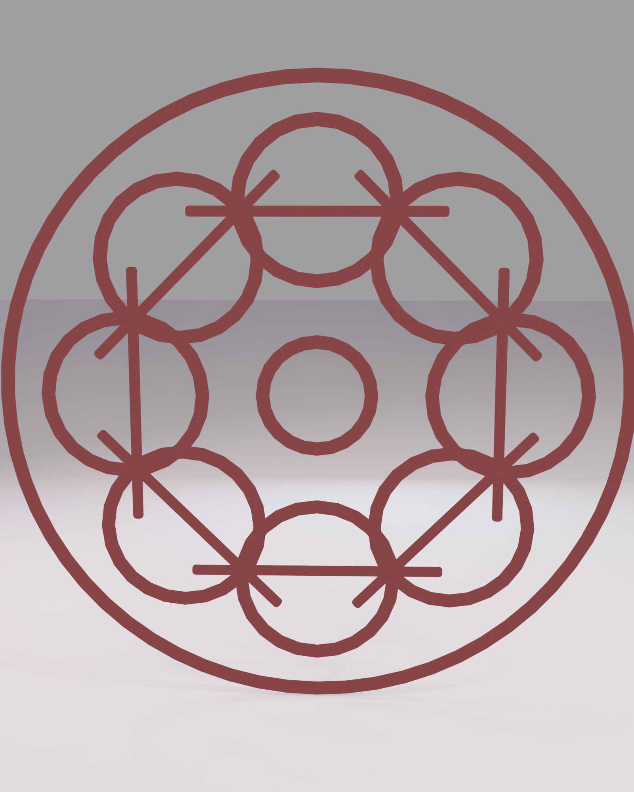

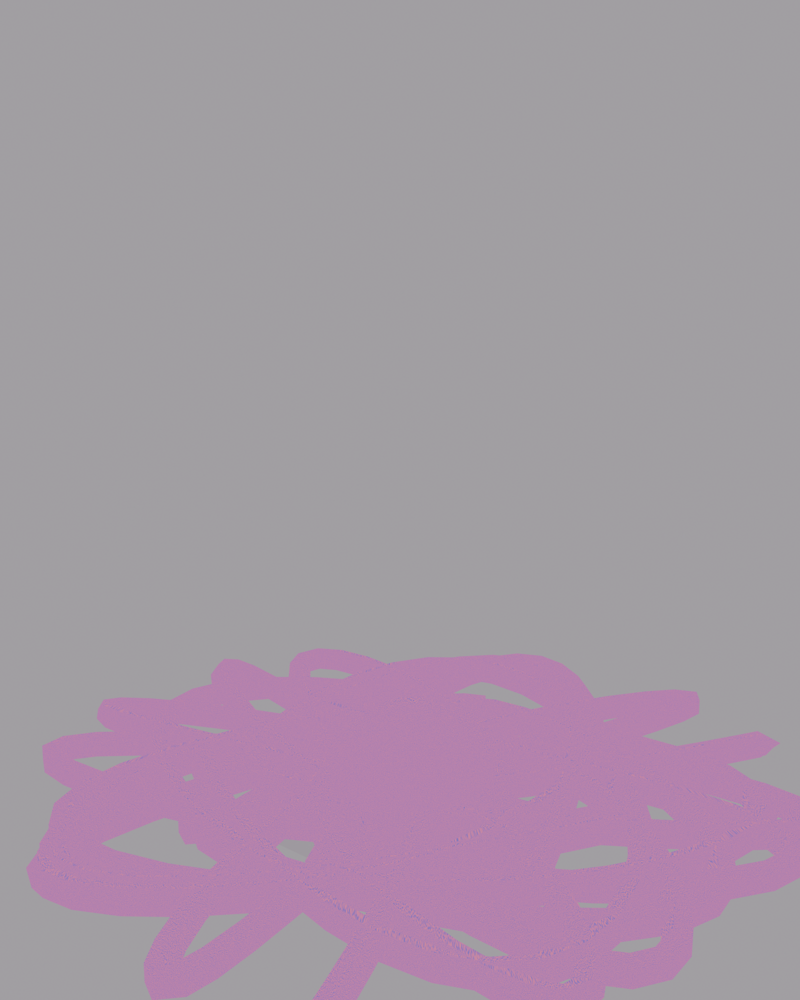

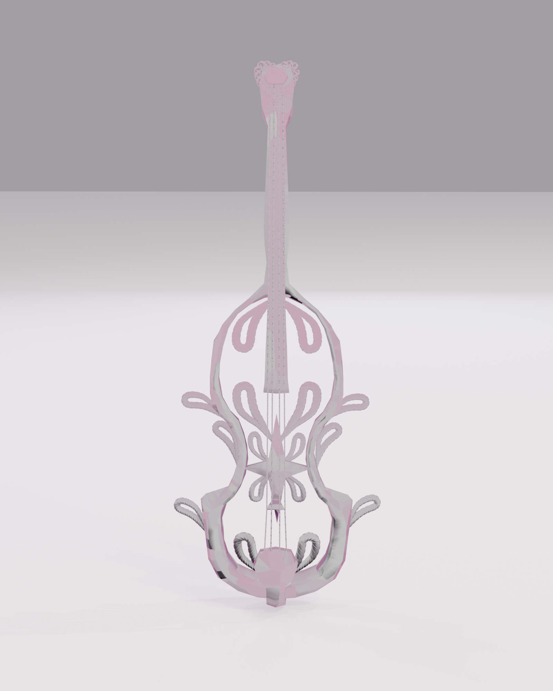

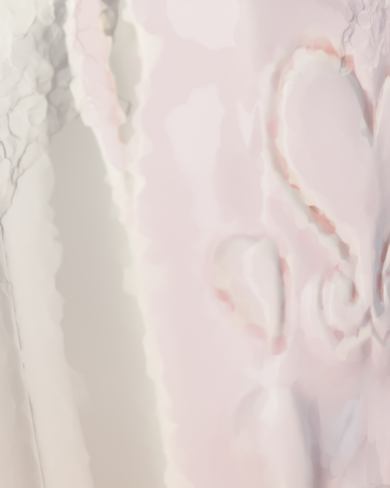

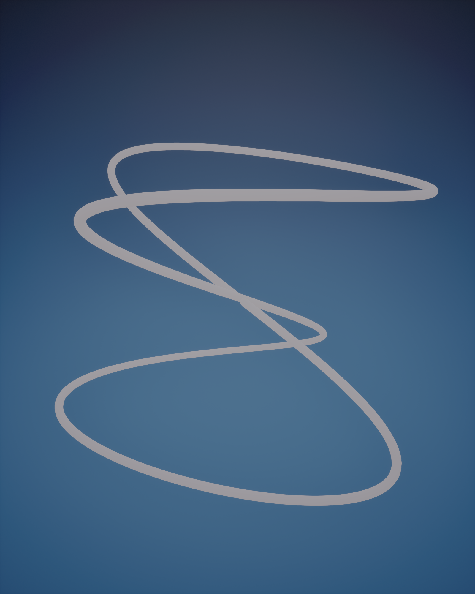
04 · Studies
The hand underneath the polish.
Sketch and sculpt fragments stay in the board as traces of the hand underneath the finished surfaces.

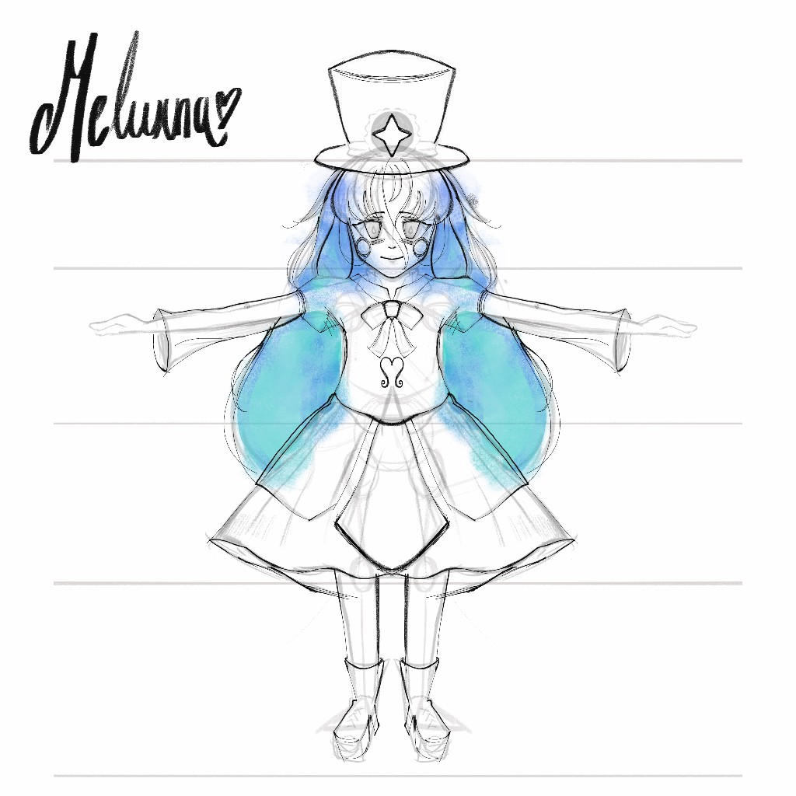

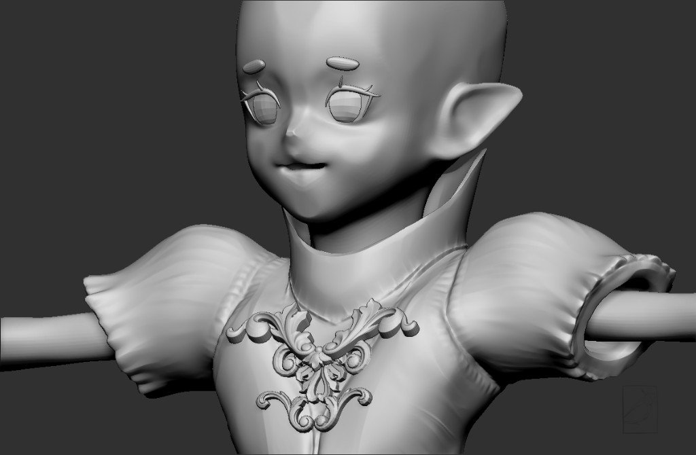
Keep looking
The gallery ends before the work does.
For process, systems, shaders, topology, runtime work, and the broader render archive, continue into the project pages.